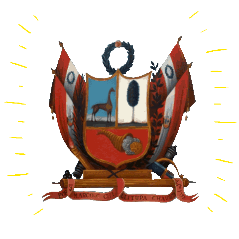

El máximo símbolo de nuestra patria. Nuestra bandera tiene tres franjas verticales de colores rojo y blanco. El color rojo, según los historiadores, representa la sangre derramada de miles de héroes y mártires que dieron la vida por defender su patria y su gente. Mientras que el color blanco representa la libertad, justicia y paz en el Perú.
El Himno Nacional es una composición poética y musical que consta de siete estrofas y un coro que remarca gestas libertarias del Perú. Fue entonado por primera vez por Rosa Merino el 23 de setiembre de 1821 y oficializado por decreto el 15 de abril de 1822.

El primer Escudo del Perú fue creado en Pisco por José de San Martín el 21 de octubre de 1820. Es el símbolo de la soberanía en el Perú. En febrero de 1825, el Congreso Constituyente, presidido por José Gregorio Paredes, dispuso que el nuevo Escudo Nacional se divida en tres grandes campos, representando las riquezas que posee nuestro país en los tres reinos naturales: animal, vegetal y mineral.
